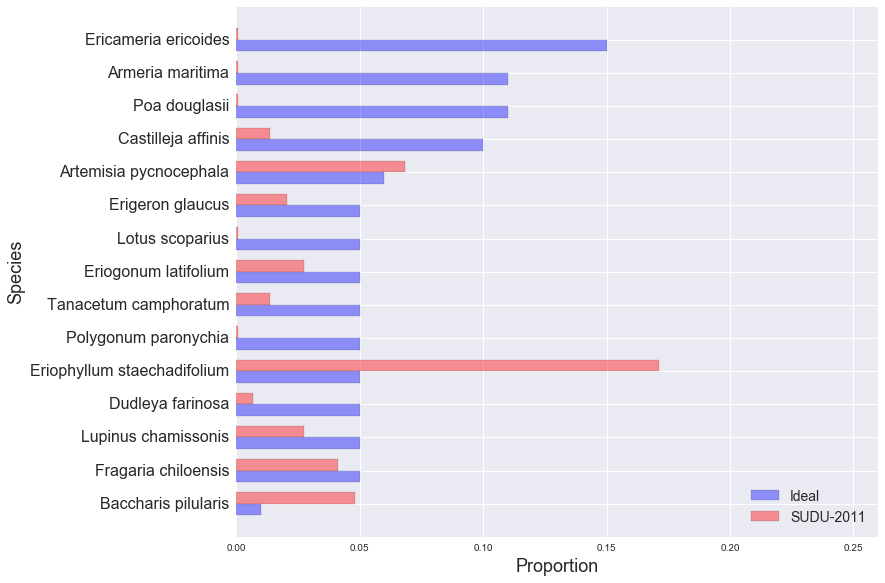

golden gate national parks conservancy: scrub mix
SUDU-2011
EAPO-2011
NMS-2010
NMS-2011
NMS-2012
NUWO-2010
NUWO-2011
NUWO-2012
SUDU-2008
SUDU-2009
SUDU-2010
SUDU-2011
SUDU-2012
Ideal and Observed Scrub Mix, SUDU-2011:
Other Species in SUDU-2011 Sample:
| Species | Observed % |
|---|---|
| Bromus diandrus | 16.44% |
| Bare ground | 10.27% |
| Marah fabaceus | 4.79% |
| Grindelia hirsutula | 4.11% |
| Achillea millefolium | 2.74% |
| Rumex salicifolius | 2.05% |
| Rubus ursinus | 2.05% |
| Sonchus oleraceus | 2.05% |
| Lupinus arboreus | 1.37% |
| Thatch | 1.37% |
| Geranium dissectum | 1.37% |
| Cerastium glomeratum | 1.37% |
| Senecio vulgaris | 0.68% |
| Woody debris | 0.68% |
| Anagallis arvensis | 0.68% |
| Ehrharta erecta | 0.68% |
| Vulpia bromoides | 0.68% |
| Eschscholzia californica | 0.68% |
| Ambrosia chamissonis | 0.68% |
| Avena sp. | 0.68% |
| Taraxacum officinalis | 0.68% |